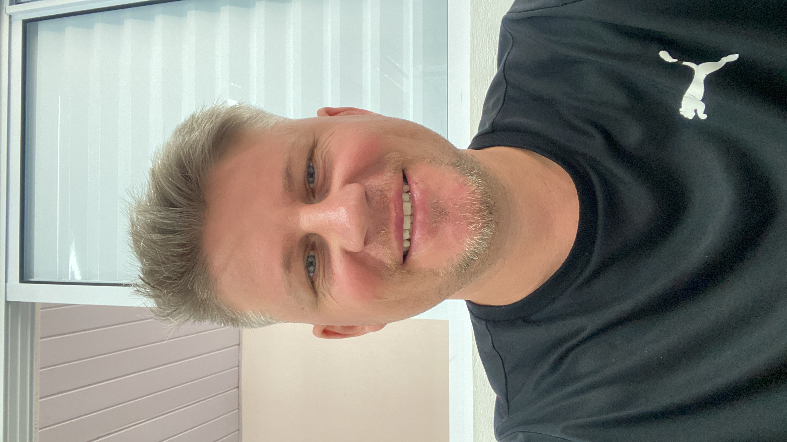

Loja Virtual Meke Lovers
Projeto fictício de e-commerce com foco em experiência visual, navegação simples e design moderno para venda de produtos de beleza.

Transformando ideias em soluções através da tecnologia.
Sou estudante de Análise e Desenvolvimento de Sistemas e estou em constante evolução na área de tecnologia. Gosto de criar soluções web, aprender novas ferramentas e transformar ideias em experiências funcionais e bem apresentadas.
Projeto fictício de e-commerce com foco em experiência visual, navegação simples e design moderno para venda de produtos de beleza.
Solução fictícia para organizar cadastros de clientes, veículos e contratos, com uma interface clara e organizada para o dia a dia do usuário.